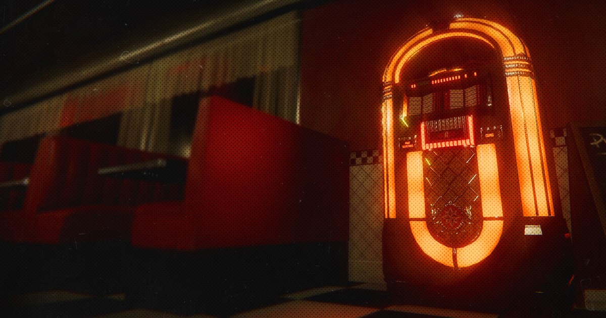

Phasmophobia's Resonance update is live — Dowsing Rods, new voice commands, and the move to Unity 6
Kinetic Games' Resonance update (v0.20.0.0) is out today on every platform, free for everyone who owns Phasmophobia — new Dowsing Rods to find the Bone, expanded voice recognition, a reworked Sound Sensor, and the game's long-awaited move to Unity 6.

Disclosure: this post contains affiliate links. I earn a commission on qualifying purchases.
Phasmophobia's biggest update of the year is live. Kinetic Games released the Resonance update — version 0.20.0.0 — on Tuesday, November 24, free on every platform the game is on: PC via Steam, PlayStation 5, PS VR2, and Xbox Series X|S. It is the second Unity 6 move in gaming today, and like the other one, it is a technical overhaul with new toys attached.
Resonance started life as two separate projects — a content update and an engine migration — running in parallel. Kinetic Games decided shipping them weeks apart would be a headache for everyone, folded them into one patch, named it, and announced the date on November 17. The result is a single update that changes how the game looks, how it runs, and how you hunt.
Dowsing Rods: a new way to find the Bone
The headline new tool is the Dowsing Rods. Ghost hunters can now use the divining rods to locate the Bone, the optional objective that has always been a pain to track down — especially on the sprawling maps like Brownstone High School, where the Bone can hide in any room across multiple floors.
Like everything else in the kit, the rods scale with tier. The higher the tier, the more accurate the reading, and the top-tier rods can pinpoint the exact floor the Bone is hiding on. It is a small addition that solves a real, everyday frustration: the long, silent sweep of an empty school with a camera in hand and nothing to show for it.
Talk to the ghosts — and they might answer
Resonance also expands Phasmophobia's voice recognition, the system that has always set it apart from other co-op horror games. Players can now tell ghosts to interact with nearby objects — ask a ghost to throw something, and it might just do it. The new voice lines give hunters one more way to provoke a response out of a shy ghost, and one more way to get themselves killed doing it.
The Sound Sensor gets a reworked map interface on the truck, so identifying where a sound actually came from is easier mid-hunt. Players can also build custom map pools, choosing which maps show up in their contracts instead of leaving it to chance.
Unity 6, better light, fewer crashes
Under the hood, Resonance moves Phasmophobia to Unity 6 — the same engine jump Escape from Tarkov made earlier today. Kinetic Games calls it a technical upgrade first and foremost, but the effects are visible: more realistic lighting, a full lighting overhaul, better performance and stability, lower CPU, GPU, VRAM and RAM use, and fixes for memory leaks and common crashes. New graphics and quality presets arrive with it, including an Extreme shadow setting and options built for Steam Deck, plus VR Eye Adaptation and eight color-blindness options.
The update also brings Phasmophobia to Xbox Play Anywhere, so Xbox players can carry their progress across console and PC, and adds a conduct warning system.
Kinetic Games did not announce a launch time, so the update is going live at some point during the day rather than at a set hour — the full patch notes arrive with the release itself. The game is still in Early Access, priced at $19.99, and Resonance is free for everyone who owns it. The road to 1.0 runs through updates like this one: the engine debt gets paid down first, and then the game can grow on top of it.
Sources: Phasmophobia Resonance Update: Patch Notes v0.20.0.0 (iGameMag) · Phasmophobia 0.20.0.0 Adds Dowsing Rods and a Lighting Overhaul (Console PC Gaming) · Phasmophobia Resonance Update (EWM Play) · New Free Phasmophobia Update is a Game-Changer (Game Rant) · Phasmophobia's next update lets you ask ghosts to throw things (Happening Now, summarizing Eurogamer)
Gear up: Razer — mice, keyboards, headsets and laptops.